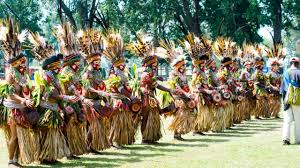
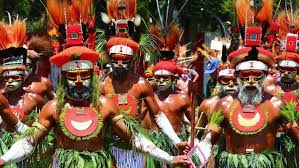
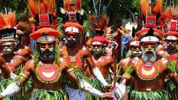
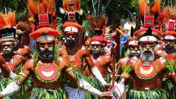

Popular Events
| Festival | Location | Month |
|---|---|---|
| Goroka Show | Goroka | September |
| Hiri Moale | Port Moresby | November |
| Morobe Show | Lae | October |
Festival
 

| Festival | Location | Month |
|---|---|---|
| Goroka Show | Goroka | September |
| Hiri Moale | Port Moresby | November |
| Morobe Show | Lae | October |
